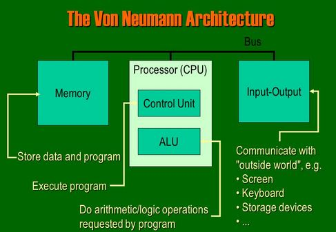
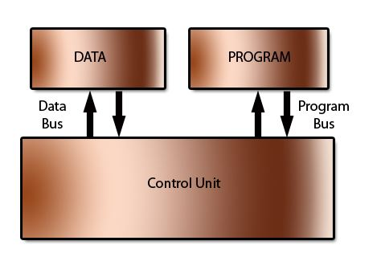

The Von Neumann architecture
This has been incredibly successful, with most modern computers following the idea. When you look at the Von Neumann Architecture, you can see the various components:
The computer will have memory that can hold both data and also the program processing that data. In modern computers this memory is RAM.
The control unit will manage the process of moving data and program into and out of memory and also deal with carrying out (executing) program instructions - one at a time. This includes the idea of a 'register' to hold intermediate values. In the illustration above, the 'accumulator' is one such register.
The 'one-at-a-time' phrase means that the von neumann architecture is a sequential processing machine.
Whatever values that are passed to and forth are stored once again in some internal registers.
This part of the architecture is solely involved with carrying out calculations upon the data. All the usual Add, Multiply, Divide and Subtract calculations will be available but also data comparisons such as 'Greater Than', 'Less Than', 'Equal To' will be available. Bus
Notice the arrows between components? This implies that information should flow between various parts of the computer. In a modern computer built to the Von Neumann architecture, information passes back and forth along a 'bus'. There are buses to identify locations in memory - an 'address bus'
And there are buses to allow the flow of data and program instructions - a 'data bus'.
You should supplement these notes with spending some time using a CPU Similator
One example is the Peter Higginsons CPU Simulator
This will assist in an understanding of how data moves around the CPU - which is based on the Von Neumann Architecture, a computer architecture based on a 1945 description by the mathematician and physicist John von Neuman
PLEASE BECOME FAMILIAR WITH WORKING OF THIS OR AN ALTERNATIVE CPU SIMULATOR

Every single piece of data and/or instruction (instr) must pass across the data bus so that the data/instr can move from main memory into the CPU and vice versa.
The Von Neumann bottleneck occurs because the rate at which the CPU can carry out instructions is much faster than the data bus
If nothing were done, the CPU would spend most of its time waiting around for instructions.
The rate at which data needs to be fetched and the rate at which instructions need to be fetched are often very different. And yet they share the same bottlenecked data bus
This alternative architecture is mainly used within the CPU to handle its caches, but it is less used with main memory because of complexity and cost

What are some advantages of this alternative architecture?
Remember, PLEASE BECOME FAMILIAR WITH WORKING of the Peter Higginson or any alternative CPU simulator